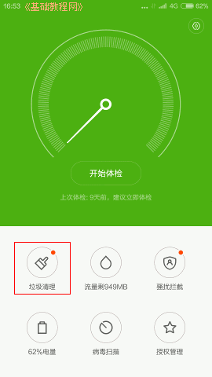

小米4手机操作指南玩家手册
作者：TeliuTe 来源：基础教程网
七、卸载应用程序 返回目录 下一课卸载程序可以按住图标拖到顶部回收站，或者在“设置－其他设置”，或者在“安全中心－垃圾清理－深度清理”；
1、卸载应用程序
1）在桌面上长按住一个图标不松手，过一会跳动一下，上面出来一个回收站，拖过去就会提示是否卸载；
2）在桌面找到齿轮图标的“设置”，点“设置-其他应用管理”；
3）点按一个应用程序，在出来的信息详情界面里点“卸载”；
4）在桌面找到绿色盾牌的“安全中心图标”，点“安全中心－垃圾清理”；

5）在出来的界面里，在上面找到点“深度清理”，；
6）在出来的程序列表里，选中一个程序后，点下面的“卸载”按钮；
7）另外也可以在其他手机助手里卸载应用程序；
本节学习了卸载应用程序的基础知识，如果你成功地完成了练习，请继续学习下一课内容；
本教程由86团学校TeliuTe制作|著作权所有
基础教程网：http://teliute.org/
美丽的校园……
转载和引用本站内容，请保留作者和本站链接。